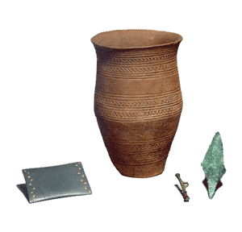

|
Farming
societies often constructed more substantial and durable monuments,
some of which we can still see in the landscape and others which
have been recovered as ground-plans in archaeological excavation.
Various types of ritual site can be identified, the most famous
example being Stonehenge which dates from the 3rd millennium
BC (5). One of the problems with interpreting sites, and indeed
objects, is that they could have had both utilitarian and ritual
uses. A clear distinction between the spiritual and material worlds
probably did not exist for our ancestors. Even hoards, long thought
to have been for safe-keeping, sometimes actually represent ritual
offerings.
|
|
|
Honouring
the dead
The
earliest evidence for burial rites can be attributed to Neanderthal
(an earlier form of Homo sapiens) populations in the last
Ice Age. With the appearance of modern people, burials began to
become more elaborate. Formal burial proliferated in later prehistory
and gave rise to the many conspicuous burial mounds and cairns seen
in parts of the world. With the dead were buried a wide array of
goods reflecting social status and probably a fundamental belief
in an afterlife. Certain packages of items recur in burials of particular
periods, like Beaker pots, archers' wristguards and copper daggers
in Early Bronze Age burials across Western Europe (6). Such objects
gave individuals a distinct identity which would have been recognised
by their contemporaries and is sought for by archaeologists
5.
Above Right: Mold Cape (Clwyd, Wales),c. 1.900-1,600BC,
and Stonehenge (Wiltshire, England), 3rd millennium BC
6.
Right: Beaker burial from Barnack
(Cambridgeshire, England), c. 2,200 BC
|
 |